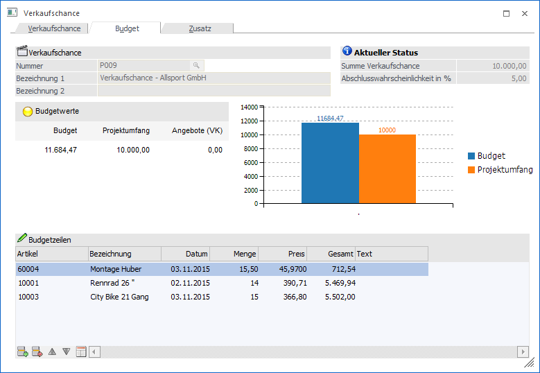
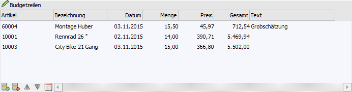
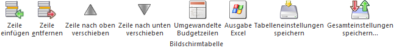

In dem Register "Budget" werden alle bereits erfassten Budgetwerte angezeigt. Zusätzlich können neue Budgetzeilen erfasst werden.

Ø Nummer
An dieser Stelle wird die Nummer der aktuellen Verkaufschance angezeigt.
Ø Bezeichnung 1 / Bezeichnung 2
An dieser Stelle wird die Bezeichnung bzw. Beschreibung der Verkaufschance dargestellt.
Ø Summe Verkaufschance
Hier wird der aktuelle Umfang der Verkaufschance (Pre-Sales-Umfang) angezeigt.
Ø Abschlusswahrscheinlichkeit in %
Hier wird die aktuelle Abschlusswahrscheinlichkeit der Verkaufschance (Pre-Sales-Abschlusswahrscheinlichkeit) angezeigt.
Ø Budgetwerte
In diesem Bereich werden die verschiedenen Budgetwerte angezeigt:
ü Budgets
Anzeige des erfassten
Budgets.
ü Projektumfang
Anzeige des
aktuellen Projektumfangs. Dieser wird bei der Erfassung des Status mit
angegeben.
ü Angebote
Anzeige der Summe der
erfassten Angebote für dieses Projekt
Hinweis
Die Aktualisierung der Werte erfolgt durch Anwahl des Buttons "Aktualisieren".
Tabelle "Budgetzeilen"
In der Tabelle "Budgetzeilen" werden alle bisher erfassten Budgetzeilen der Verkaufschance aufgelistet und können direkt editiert oder ergänzt werden.

Ø Artikel
In dieser Spalte wird der Text des Pre-Sales-Status dargestellt.
Ø Bezeichnung
An dieser Stelle wird das Erfassungsdatum der Pre-Sales-Zeile angezeigt.
Ø Datum
In der Spalte "Benutzer" wird der Benutzer der Erfassung angezeigt.
Ø Menge
Hier wird der Name des Benutzers in Klarschrift angezeigt.
Ø Preis
Pro Pre-Sales-Erfassung kann ein Projektumfang angegeben werden, welcher hier ausgewiesen wird.
Ø Gesamt
In dieser Spalte wird die erfasste Abschlusswahrscheinlichkeit dargestellt.
Ø Text
Pro Pre-Sales-Erfassung kann eine Detailbeschreibung angegeben werden, welche hier ausgewiesen wird.
Tabellenbuttons

Ø Zeile einfügen
Durch Anwahl dieses Buttons kann eine neue Budgetzeile eingefügt werden.
Ø Zeile löschen
Durch Anwahl dieses Buttons wird die markierte Budgetzeile gelöscht.
Ø Zeile nach oben verschieben
Durch Anwahl des Buttons "Zeile nach oben verschieben" wird die markierte Budgetzeile nach oben verschoben.
Ø Zeile nach unten verschieben
Durch Anwahl des Buttons "Zeile nach unten verschieben" wird die markierte Budgetzeile nach unten verschoben.
Ø Umgewandelte Budgetzeilen
Durch Anwahl dieses Buttons werden in der Tabelle die bereits umgewandelten Budgetzeilen angezeigt. Bei einer weiteren Anwahl des Buttons erfolgt wieder die Anzeige der nicht umgewandelten Zeilen.
Hinweis
Bereits umgewandelte Budgetzeilen können nicht mehr editiert werden.
Ø Ausgabe Excel
Durch Anwahl des Buttons "Ausgabe Excel" wird der Inhalt der Tabelle nach Microsoft Excel übergeben.
Ø Tabelleneinstellungen speichern
Die Spalten einer Tabelle können grundsätzlich an beliebige Positionen verschoben, bzw. in der Breite entsprechend angepasst werden. Durch Anwahl des Buttons "Tabelleneinstellungen speichern" werden die Einstellungen benutzerspezifisch gespeichert und bei dem nächsten Aufruf des Programmpunktes wieder vorgeschlagen.
Ø Gesamteinstellungen speichern
Im Gegensatz zu "Tabelleneinstellungen speichern" können mit "Gesamteinstellungen speichern" mehrere Tabellenaufbauten gespeichert und nach Wunsch geladen werden. Zusätzlich werden Sonderfunktionen der Tabelle (z.B. "Spalte gruppieren") ebenfalls bei der Speicherung bedacht.